class: center, middle .title[Lecture 3: Regression analysis & model fitting] .author[Shane Elipot] .institution[The Rosenstiel School of Marine and Atmospheric Science, University of Miami] .coauthor[] .institution[] .date[] .note[] .footnote[Created with [{Remark.js}](http://remarkjs.com/) using [{Markdown}](https://daringfireball.net/projects/markdown/) + [{MathJax}](https://www.mathjax.org/)] --- exclude: true name: foreword class: left, .toc[[✧](#toc)] ## Foreword --- name: references class: left, .toc[[✧](#toc)] ## References [1] Bendat, J. S., & Piersol, A. G. (2011). *Random data: analysis and measurement procedures* (Vol. 729). John Wiley & Sons. [2] Thomson, R. E., & Emery, W. J. (2014). *Data analysis methods in physical oceanography*. Newnes. [dx.doi.org/10.1016/B978-0-12-387782-6.00003-X](http://dx.doi.org/10.1016/B978-0-12-387782-6.00003-X) [3] Press, W. H. et al. (2007). *Numerical recipes 3rd edition: The art of scientific computing*. Cambridge university press. [4] von Storch, H. and Zwiers, F. W. (1999). *Statistical Analysis in Climate Research*, Cambridge University Press [5] Rawlings, J., Pantula, S. G., and Dickey, D. A. (1998) *Applied Regression Analysis*, A research tool, second edition, Springer [6] Wunsch, C. (2006). Discrete inverse and state estimation problems : with geophysical fluid applications. Cambridge University Press. [7] Fan, J. and Gijbels, I. (1996), *Local Polynomial Modelling and Its Applications*, CRC Press --- name: toc class: left, .toc[[✧](#toc)] # Lecture 3: Outline 1. [Introduction](#introduction) 2. [Linear regression](#regression) 3. [Polynomial interpolation](#polynomial) 4. [Local Polynomial modeling](#localpolynomial) 5. [A note on non linear modeling](#nonlinear) --- name: introduction class: center, middle, .toc[[✧](#toc)] # 1. Introduction --- class: left, .toc[[✧](#toc)] ## Introduction Regression analysis consists in using mathematical expressions (that is modeling, or modelling in the U.K.) to describe to some extent the behavior of a random variable (r.v.) of interest. This variable is called a *dependent variable*. The variables that are thought to provide information about the dependent variable and are incorporated in the model are called *independent variables*. The models used in regression analysis typically involve unknown constants, called *parameters*, which are to be **estimated** from the data. -- The mathematical complexity of the model, and the degree to which it is realistic, depend on how much is known about the process and the purpose of the regression analysis (and the ability and knowledge of the scientist). Most regression models that we will encounter are **linear** in their parameters. If they are not linear, they can often be linearized. Critical thinking should be employed, as **any model can be fitted to (or regressed against) any data**. --- class: left, .toc[[✧](#toc)] ## Example Daily atmospheric CO$_2$ measured at Mauna Loa in Hawaii at an altitude of 3400 m. Data from Dr. Pieter Tans, NOAA/ESRL ([www.esrl.noaa.gov/gmd/ccgg/trends/](http://www.esrl.noaa.gov/gmd/ccgg/trends/)) and Dr. Ralph Keeling, Scripps Institution of Oceanography ([scrippsco2.ucsd.edu](http://scrippsco2.ucsd.edu/)). .center[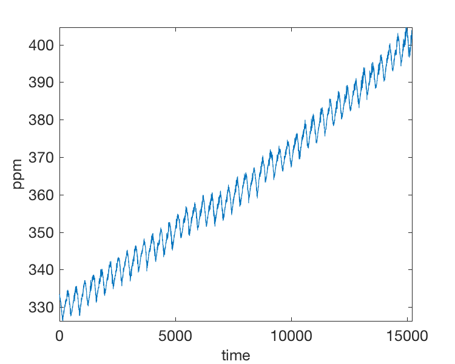] --- class: left, .toc[[✧](#toc)] ## Example Determining the linear trend of this time series is an example of linear regression. Further modeling could include estimating the seasonal cycle of the time series etc. .center[] --- name: regression class: center, middle, .toc[[✧](#toc)] # 2. Linear regression --- class: left, .toc[[✧](#toc)] ## Simple linear regression We are going to review the simplest linear model involving one independent variable `$x$` and one dependent variable `$y$`. In parallel we will also present the equations for a more general model relating `$y$` to `$p$` dependent variables `$x_1,x_2,\ldots,x_p$`. Matlab uses notation that ressemble the matrix formulas for the general (multivariate) linear model. -- As an example, we will see that the *least squares* solution of the linear model is `$$ \widehat{\boldsymbol{\beta}} = (\mathbf{X}^\mathrm{T}\mathbf{X})^{-1}\mathbf{X}^\mathrm{T}\mathbf{Y} $$` which in Matlab can be written ```ruby B = (X'*X)^-1*X'*Y; ``` but is better coded as ```ruby B = (X'*X)\X'*Y; ``` --- class: left, .toc[[✧](#toc)] ## Simple linear regression Previously, when examining a set of observations `$Y_i$` of `$y$`, we assumed that the expectation, or true mean, was constant, i.e. `$E[Y_i] = \mu_y$`. -- We know consider the case when the mean is a function of another variable, as an example time. Linear regressions can consist in estimating the trend and the seasonal cycle of your time series. -- .left-column[<br><br>In the case of the CO$_2$ record, the mean is clearly not a constant, increasing every year, but also oscillating within each year.] .right-column[] --- class: left, .toc[[✧](#toc)] ## Simple linear regression The simplest model is that the **true mean or expectation** of `$y$` changes at a constant rate as the value of `$x$` decreases or increases: `$$ E[Y_i] = \beta_0 + \beta_1 X_i, \quad i = 1,\ldots,n $$` where `$\beta_0$` and `$\beta_1$` are the parameters to estimate. .right-column[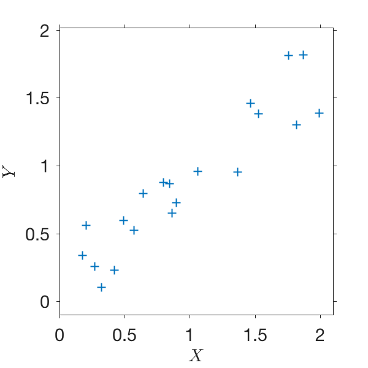] .left-column[<br><br><br>This model is applicable as an example for estimating a linear trend of a time series, or any linear relationship between two r.vs.] --- class: left, .toc[[✧](#toc)] ## Simple linear regression The observations of the dependent variable `$y$` are looked at as individual realizations of the r.vs. `$Y_i$` with populations means `$E[Y_i]$`. The deviation of `$Y_i$` from `$E[Y_i]$` is taken into account by incorporating a random error `$\epsilon_i$` in the linear model `$$ Y_i = \beta_0 + \beta_1 X_i + \epsilon_i $$` -- .right-column[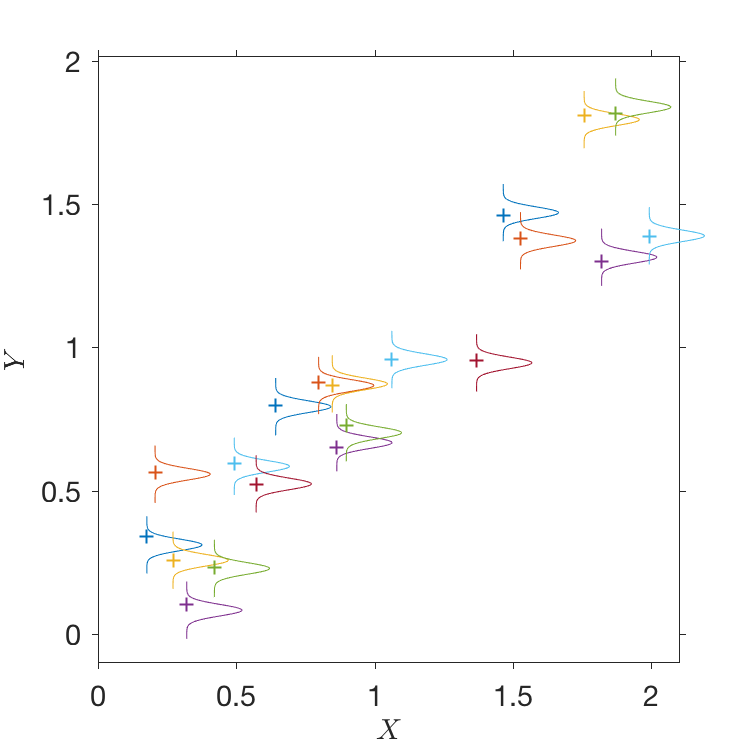] .left-column[<br><br>The `$\epsilon_i$` are assumed normally independent identically distributed (i.i.d.) r.vs. as `$\sim \mathcal{N}(0,\sigma)$`. Since `$\beta_0,\beta_1$` and `$X_i$` are constant, `$Y_i \sim \mathcal{N}(E[Y_i],\sigma)$`. <br><br><br>In contrast, the observed values of `$X$` are supposed to be free of errors, treated as constants.] --- class: left, .toc[[✧](#toc)] ## General linear model (or multiple regression) The general linear model with `$p$` **independent variables** for observation `$i$` is `$$ Y_i = \beta_0 + \beta_1 X_{i1} + \beta_2 X_{i2} + \cdots + \beta_p X_{ip} + \epsilon_i $$` There are `$p'=p+1$` parameters to estimate: a constant `$(\beta_0)$` and `$p$` factors `$\beta_1, \ldots,\beta_p$`. In matrix notation, for `$n$` observations, we obtain the *linear system* `$$ \mathbf{Y} = \mathbf{X} \boldsymbol{\beta} + \boldsymbol{\epsilon} $$` `$$ \begin{eqnarray} \begin{bmatrix} Y_1 \\ Y_2 \\ \vdots \\ Y_n\end{bmatrix} &=& \begin{bmatrix} 1 & X_{11} & X_{12} & \cdots & X_{1p}\\ 1 & X_{21} & X_{22} & \cdots & X_{2p}\\ \vdots & \vdots & \vdots & & \vdots\\ 1 & X_{n1} & X_{n2} & \cdots & X_{np}\\ \end{bmatrix} & \begin{bmatrix} \beta_0 \\ \beta_1 \\ \vdots \\ \beta_p \end{bmatrix} + & \begin{bmatrix} \epsilon_1 \\ \epsilon_2 \\ \vdots \\ \epsilon_n \end{bmatrix} \\ (n \times 1) & & (n\times p') & (p' \times 1) & (n \times 1) \\ \end{eqnarray} $$` --- class: left, .toc[[✧](#toc)] ## General linear model `$$ \boldsymbol{\beta} = \begin{bmatrix} \beta_0 \\ \beta_1 \\ \vdots \\ \beta_p \end{bmatrix} $$` Each element `$\beta_j$` is a *partial regression coefficient* that quantifies the change in the dependent variable `$Y_i$` per unit change in the independent variable `$X_{ij}$`, **assuming all other independent variables are held constant**. --- class: left, .toc[[✧](#toc)] ## Simple linear model `$$ Y_i = \beta_0 + \beta_1 X_i + \epsilon_i $$` If the `$\epsilon_i$` were `$0$` and the model were absolutely true, any two pairs of observations `$(X_i,Y_i)$` would be enough to solve for the two unkown parameters `$\beta_0$` and `$\beta_1$`. -- Yet, because of errors, another method is used, called *least squares estimation*, which gives a solution, or estimate `$(\widehat{\beta_0},\widehat{\beta_1})$` that leads to **the smallest possible sum of squared deviations** of the observations `$Y_i$` from the estimates `$\widehat{E[Y_i]}$` of their true means `$E[Y_i]$`. --- class: left, .toc[[✧](#toc)] ## Simple linear model: LS solution Let `$(\widehat{\beta_0},\widehat{\beta_1})$` provide the estimate of the true mean `$$ \widehat{E[Y_i]} = \widehat{\beta_0} + \widehat{\beta_1} X_i \equiv \widehat{{Y}_i} $$` such that the sum of squares of deviations from the mean `$$ SS(Res) = \sum_{i=1}^n (Y_i - \widehat{{Y}_i})^2 = e^2_i $$` is minimized. `$e_i$` is called the $i$-th observed *residual*. --- class: left, .toc[[✧](#toc)] ## General linear model For the general model, in matrix notation, `$$\widehat{\mathbf{Y}}\equiv \mathbf{X}\widehat{\boldsymbol{\beta}}$$` and the residuals are found in the `$(n \times 1)$` vector `$$ \mathbf{e} = \mathbf{Y}-\widehat{\mathbf{Y}} = \mathbf{Y}-\mathbf{X}\widehat{\boldsymbol{\beta}} $$` and the sum of squares of residuals is `$$ SS(Res) = \mathbf{e}^\mathrm{T}\mathbf{e} = (\mathbf{Y}-\widehat{\mathbf{Y}})^\mathrm{T}(\mathbf{Y}-\widehat{\mathbf{Y}}) = (\mathbf{Y}-\mathbf{X}\widehat{\boldsymbol{\beta}})^\mathrm{T}(\mathbf{Y}-\mathbf{X}\widehat{\boldsymbol{\beta}}) $$` which is a minimum because of `$\widehat{\boldsymbol{\beta}}$`. How to find `$\widehat{\boldsymbol{\beta}}$`? --- class: left, .toc[[✧](#toc)] ## Simple linear model The method to find the values `$(\widehat{\beta_0},\widehat{\beta_1})$` that minimize `$SS(Res)$` is classic. You take the derivatives of `$SS(Res)$` with respect to each of the $p+1$ parameters and equate the results to zero. You obtain a system of $p+1$ equations with $p+1$ unkowns. For the simple linear model you obtain the *normal equations* `$$ \begin{eqnarray} &\widehat{\beta_0} n\, &+& \widehat{\beta_1} \sum_i X_i & = & \sum_i Y_i \\ &\widehat{\beta_0} \sum_i X_i\, &+& \widehat{\beta_1} \sum_i X_i^2 & = & \sum_i X_i Y_i\\ \end{eqnarray} $$` which solution is `$$ \begin{eqnarray} \widehat{\beta_1} & = & \frac{\sum_i (X_i - \overline{X})(Y_i - \overline{Y})}{\sum_i(X_i - \overline{X})^2} = \frac{s_{xy}}{s_{xx}} = \frac{s_{xy}}{s^2_{x}}\\ \widehat{\beta_0} & = & \overline{Y} - \widehat{\beta_1} \overline{X}\\ \end{eqnarray} $$` --- class: left, .toc[[✧](#toc)] ## Simple linear model The predicted values from the solution of the linear model are `$$ \widehat{Y_i} = \widehat{\beta_0} + \widehat{\beta_1}X_i = \widehat{E[Y_i]} $$` `$\widehat{Y_i}$` can be interpreted as being **both** the *estimate of the population mean* of `$y$` for a given value of `$x$`, and the *predicted value* value of `$y$` for a future value of `$x$` which is `$X_i$`. .center[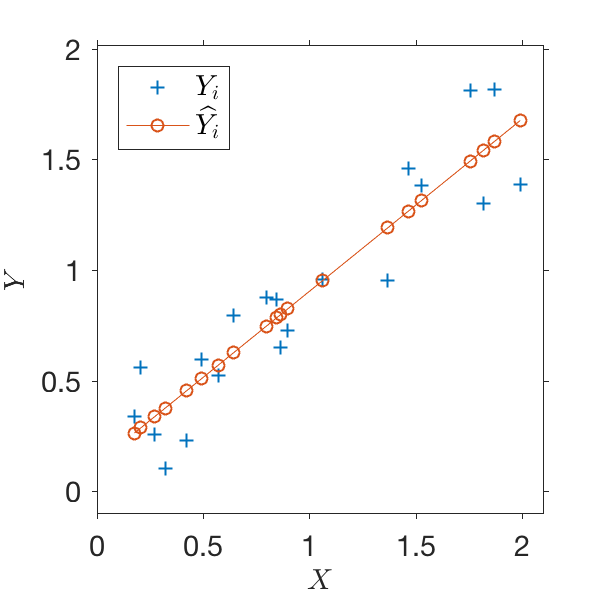] --- class: left, .toc[[✧](#toc)] ## General linear model For the multiple regression model, the normal equations are obtained `$$ \frac{\partial SS(Res)}{\partial \widehat{\boldsymbol{\beta}}} = 0 \rightarrow \mathbf{X}^\mathrm{T}\mathbf{X}\widehat{\boldsymbol{\beta}} = \mathbf{X}^\mathrm{T}\mathbf{Y} $$` and the least squares (LS) solution is `$$ \widehat{\boldsymbol{\beta}} = (\mathbf{X}^\mathrm{T}\mathbf{X})^{-1}\mathbf{X}^\mathrm{T}\mathbf{Y} $$` The predicted values of `$y$` are `$$ \begin{eqnarray} \widehat{\mathbf{Y}} & = & \mathbf{X}\widehat{\boldsymbol{\beta}} = \mathbf{X}(\mathbf{X}^\mathrm{T}\mathbf{X})^{-1}\mathbf{X}^\mathrm{T}\mathbf{Y}\\ & = & \mathbf{P} \mathbf{Y} \end{eqnarray} $$` with `$\mathbf{P} = \mathbf{X}(\mathbf{X}^\mathrm{T}\mathbf{X})^{-1}\mathbf{X}^\mathrm{T}$` called *the projection matrix*. This last expressions shows that the estimated `$\widehat{Y_i}$` are linear function of **all** the observed values `$Y_i$`. --- class: left, .toc[[✧](#toc)] ## Simple linear model The observations of `$y$` can now be written as the sum of the estimated population mean for a given value of `$x$` and a residual `$$ Y_i = \widehat{Y_i} + e_i $$` The sum of the squares of the observations are `$$ \begin{eqnarray} \sum_i Y_i^2 & = & \sum_i (\widehat{Y_i} + e_i)^2 \\ & = & \sum_i \widehat{Y_i}^2 + \sum_i e^2_i \end{eqnarray} $$` since it can be shown that `$\sum_i 2 \widehat{Y_i}^2 e_i =0$`. The sum of the squares of the observations is the sum of the squares "accounted for" by the model plus the sum of the squares of "unaccounted for". --- class: left, .toc[[✧](#toc)] ## Simple linear model Using `$\overline{Y} = (1/n)\sum_i Y_i$`, the decomposition of the sum of the squares can be used as follows `$$ \begin{eqnarray} \sum_i Y_i^2 - n\overline{Y}^2 & = & \sum_i \widehat{Y_i}^2 - n\overline{Y}^2 &+& \sum_i e^2_i\\ \sum_i (Y_i - \overline{Y})^2 & = & \widehat{\beta_1}^2 \sum_i(X_i-\overline{X})^2 &+& \sum_i e^2_i\\ \end{eqnarray} $$` -- What does this say? [Up to a factor `$1/(n-1)$`] -- It approximately says that: "The total variance from observations" = "variance from the regression" + "variance of the residuals" In the model `$Y_i = \widehat{\beta_1} X_i + \widehat{\beta_0}$`, the *regression part* is `$\widehat{\beta_1} X_i$`. `$\beta_1$` is called the *regression coefficient*. --- class: left, .toc[[✧](#toc)] ## Coefficient of determination From the linear model, we are interested in a quantity called the *coefficient of determination* `$$ R^2 = \frac{\sum_i (Y_i - \overline{Y})^2 - \sum_i e^2_i}{\sum_i (Y_i - \overline{Y})^2} = 1 - \frac{\sum_i e^2_i}{\sum_i (Y_i - \overline{Y})^2} $$` For the simple (univariate) linear model, `$$ \begin{eqnarray} R^2 & = & \frac{\widehat{\beta_1}^2 \sum_i(X_i-\overline{X})^2}{\sum_i (Y_i - \overline{Y})^2} = \frac{ \left(\frac{s_{xy}}{s^2_x}\right)^2 s_x^2}{s_y^2}\\ & = & \frac{s^2_{xy}}{s_x^2 s_y^2} = \left(\frac{s_{xy}}{\sqrt{s_x^2 s_y^2}}\right)^2 = r^2_{xy} \end{eqnarray} $$` `$R^2$` is thus the square of the Pearson's correlation coefficient between $x$ and $y$. --- class: left, .toc[[✧](#toc)] ## Simple linear model `$R^2$` A traditional interpretation of `$R^2$` is that it is a measure of the fraction of variance of the dependent variable `$y$` explained by the independent variable `$x$`. This is why the (square of the) Pearson correlation coefficient is very quickly interpreted as being a measure of the amount of variance explained between two variables. As an example if `$r_{xy} = 0.7$` you will often read someting like "x is able to explain 49% of the variance of y". (Since `$0.7^2=0.49$`) --- class: left, .toc[[✧](#toc)] ## Simple linear model: uncertainties In the model `$Y_i = \beta_0 + \beta_1 X_i + \epsilon_i$` where we assumed that `$\epsilon_i \sim \mathcal{N}(0,\sigma)$`, we did not know the variance `$\sigma^2$`. -- An unbiased **estimate** of `$\sigma^2$` is given by the *residual mean square*: `$$ \widehat{\sigma}^2 = s^2 \equiv \frac{\sum_i e_i^2}{n - (p + 1)} $$` This "mean" value is obtained by dividing the `$SS(Res)$` by the number of degrees of freedom for the residuals which is the number of data points `$(n)$` minus the number of parameters of the model `$(p+1)$`. --- class: left, .toc[[✧](#toc)] ## Simple linear model: uncertainties A number of formulas for the variance of the estimates can be derived and used for calculating CIs: `$$ \begin{eqnarray} \text{Var}[\widehat{\beta_1}] & = & \frac{s^2}{\sum_i (X_i - \overline{X})}\\ \text{Var}[\widehat{\beta_0}] & = & \left[ \frac{1}{n} + \frac{\overline{X}^2}{\sum_i (X_i - \overline{X})^2}\right]s^2\\ \text{Var}[\widehat{Y_i}] &=& \left[ \frac{1}{n} + \frac{(X_i - \overline{X})^2}{\sum_i (X_i - \overline{X})^2} \right]s^2\\ \text{Var}[\widehat{Y_0}] &=& \left[1+\frac{1}{n} + \frac{(X_0 - \overline{X})^2}{\sum_i (X_i - \overline{X})^2} \right]s^2\\ \end{eqnarray} $$` -- `$$ H_0: \widehat{\beta}_{1,0},Y_i = m_{1,0,Y_i}\quad \frac{\widehat{\beta_1}-m_1}{\sqrt{\text{Var}[\widehat{\beta_1}]}}, \frac{\widehat{\beta_0}-m_0}{\sqrt{\text{Var}[\widehat{\beta_0}]}}, \frac{\widehat{Y_i}-m_{Y_i}}{\sqrt{\text{Var}[\widehat{Y_i}]}} \sim t(0,n-p-1) $$` --- class: left, .toc[[✧](#toc)] ## General linear model: uncertainties For the general linear model, the formulas are `$$ \begin{eqnarray} \mathbf{P} &=& \mathbf{X}(\mathbf{X}^\mathrm{T}\mathbf{X})^{-1}\mathbf{X}^\mathrm{T}\\ \mathbf{\text{Var}}[\boldsymbol{\widehat{\beta}}] &=& (\mathbf{X}^\mathrm{T}\mathbf{X})^{-1}\sigma^2 \\ \mathbf{\text{Var}[{\widehat{\mathbf{Y}}}]} &=& \mathbf{P}\sigma^2 \\ \mathbf{\text{Var}[{\widehat{\mathbf{Y_0}}}]} &=& \left[ \mathbf{I} + \mathbf{X_0}(\mathbf{X}^\mathrm{T}\mathbf{X})^{-1}\mathbf{X_0}^\mathrm{T}\right]\sigma^2\\ \mathbf{\text{Var}[{{\mathbf{e}}}]} &=& (\mathbf{I}-\mathbf{P})\sigma^2 \\ \widehat{\sigma}^2 = s^2 &=& \mathbf{e}^\mathrm{T} \mathbf{e}/(n-p-1)\\ \end{eqnarray} $$` -- Beware that the expression aboves are matrices. As an example for the simple linear model for which `$p+1 = 2$`: `$$ \mathbf{\text{Var}}[\boldsymbol{\widehat{\beta}}] = \begin{bmatrix} \text{Var}(\widehat{\beta_0}) & \text{Cov}(\widehat{\beta_0},\widehat{\beta_1}) \cr \text{Cov}(\widehat{\beta_1},\widehat{\beta_0}) & \text{Var}(\widehat{\beta_1})\cr \end{bmatrix} $$` this implies that the parameter estimates **covary**. --- class: left, .toc[[✧](#toc)] ## Simple linear model: uncertainties .right-column[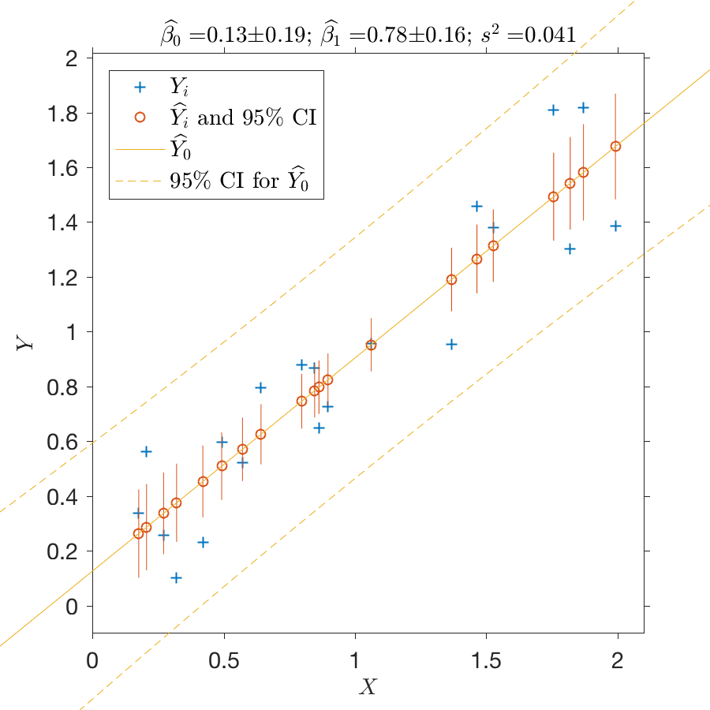] .left-column[ <br> Note how the CIs for the prediction `$\widehat{Y_0}$` for future values `$X_0$` of `$x$` are larger than the CIs for the prediction of the mean of `$Y_i$`. The variance of the prediction is the variance of estimating the mean plus the variance of the quantity estimated. The CIs are the smallest for `$X_0 = \overline{X}$`. In this case, I generated data and I had prescribed `$\beta_0=0,\beta_1=0.8,\sigma^2=0.04$` ] --- class: left, .toc[[✧](#toc)] ## Linear model by least squares `$$ Y_i = \beta_0 + \beta_1 X_{i1} + \beta_2 X_{i2} + \cdots + \beta_p X_{ip} + \epsilon_i $$` The method of least squares to find a solution to the general linear model is appropriate when four assumptions are valid: (1) the random errors `$\epsilon_i$` are normally distributed, (2) independent, (3) with zero mean and constant variance `$\sigma^2$`, and (4) the `$X_{ij}$` are observations of the `$p$` independent variables measured without errors. -- If we rely on a large number `$n$` of data, the normal assumption may be invoked because of the CLT. Otherwise, *Maximum Likelihood methods* can be used. As an example see [Elipot et al. (2016)](http://dx.doi.org/10.1002/2016JC011716). -- When the dependent variable observations are normally distributed but do not have the same variances, or errors, the method of *weighted least squares* can be implemented. -- When the independent variables are actually not independent (because they are maybe correlated), the method of *general least squares* can be implemented. See references [[5]](#references) and [[6]](#references). --- class: left, .toc[[✧](#toc)] ## Linear model by weighted least squares Let's assume that the variance of each `$\epsilon_i$` (and thus of each `$Y_i$`) is `$a^2_i\sigma^2$` where `$\sigma$` is a constant. As an example, some observations may have better accuracy than others. .center[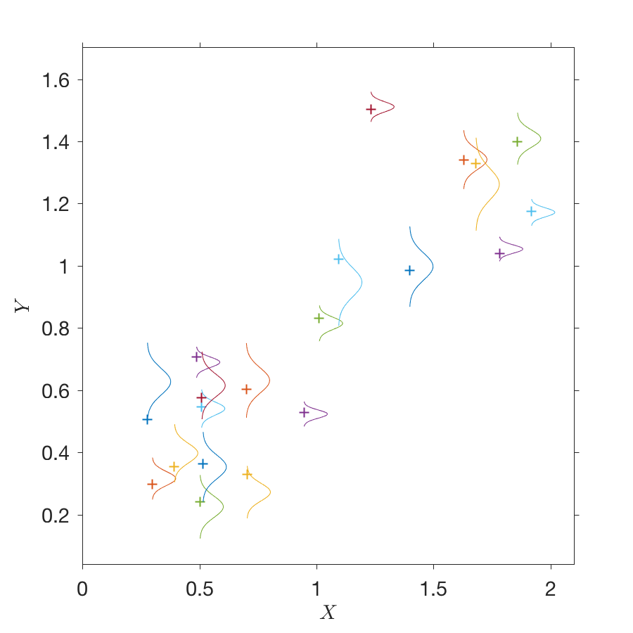] --- class: left, .toc[[✧](#toc)] ## Linear model by weighted least squares We can consider the following rescaled model, dividing by `$a_i$`: `$$ \frac{Y_i}{a_i} = \frac{1}{a_i}\beta_0 + \beta_1 \frac{X_{i1}}{a_i} + \beta_2 \frac{X_{i2}}{a_i} + \cdots + \beta_p \frac{X_{ip}}{a_i} + \frac{\epsilon_i}{a_i} $$` or `$$ Y^*_i = X^*_{i0}\beta_0 + \beta_1 X^*_{i1} + \beta_2 X^*_{i2} + \cdots + \beta_p X^*_{ip} + \epsilon^*_i $$` Because the variance of the `$\epsilon_i$` is `$a^2_i \sigma^2$`, the variance of the `$\epsilon^*_i$` becomes `$\sigma^2$`. We can now use least squares to regress `$Y^*_i$` on the `$X^*_{ij}$`. --- class: left, .toc[[✧](#toc)] ## Linear model by weighted least squares The principle here is to assign the least amount of weight to the observations with the largest variance, or error. The *weighting matrix* is `$$ \mathbf{W} = \begin{bmatrix} 1/a_1 & 0 & \cdots 0 \\ 0 & 1/a_2 & & 0\\ \vdots & \vdots & \ddots & \vdots\\ 0 & 0 & \cdots & 1/a_n\\ \end{bmatrix} $$` Consider the general linear model equation left-multiplied by `$\mathbf{W}$` `$$ \mathbf{W}\mathbf{Y} = \mathbf{W}\mathbf{X}\boldsymbol{\beta} + \mathbf{W}\boldsymbol{\epsilon} $$` which can be rewritten as `$$ \mathbf{Y}^* = \mathbf{X}^*\boldsymbol{\beta} + \boldsymbol{\epsilon}^* $$` with `$\mathbf{Y}^* = \mathbf{W}\mathbf{Y}$`, etc. --- class: left, .toc[[✧](#toc)] ## Linear model by weighted least squares The weighted least square solution is `$$ \begin{eqnarray} \widehat{\boldsymbol{\beta}} & = & (\mathbf{X}'\mathbf{V}^{-1}\mathbf{X})^{-1}\mathbf{X}'\mathbf{V}^{-1}\mathbf{Y}\\ \mathbf{\text{Var}}[\boldsymbol{\widehat{\beta}}] & = & (\mathbf{X}'\mathbf{V}^{-1}\mathbf{X})^{-1}\sigma^2\\ \mathbf{\text{Var}}[\mathbf{\widehat{Y}}] & = & \mathbf{X}(\mathbf{X}'\mathbf{V}^{-1}\mathbf{X})^{-1}\mathbf{X}'\sigma^2\\ \mathbf{\text{Var}}[\mathbf{e}] & = & [\mathbf{V} - \mathbf{X}(\mathbf{X}'\mathbf{V}^{-1}\mathbf{X})^{-1}\mathbf{X}']\sigma^2\\ \end{eqnarray} $$` with `$$ \mathbf{V}^{-1} = \mathbf{W}'\mathbf{W} = \begin{bmatrix} a^2_1 & 0 & \cdots 0 \\ 0 & a^2_2 & & 0\\ \vdots & \vdots & \ddots & \vdots\\ 0 & 0 & \cdots & a^2_n\\ \end{bmatrix} $$` -- In fact, the weighting matrix can have whatever coefficient you want! Here it is a special case that simplifies the form of the solution. See section 2.4 of reference [[6]](#references). --- name: polynomial class: middle, center, .toc[[✧](#toc)] # 3. Polynomial interpolation --- class: left, .toc[[✧](#toc)] ## Polynomial fitting Fitting a polynomial function of an independent variable `$x$` to a dependent variable `$y$` is a linear regression problem which consists in estimating the coefficients of the polynomial `$$ y = \beta_0 + \beta_1 x + \beta_2 x^2 + \ldots + \beta_k x^k + \ldots $$` -- We will review two general cases. The first case is *global polynomial fitting* where you are fitting a polynomial function that exactly estimate your data, maybe piecewise, in separate intervals. This polynomial is of maximum order of the number of observations minus one and is called an *interpolating polynomial*. -- The second case is called *local polynomial estimation* when you are fitting a polynomial in the vicinity, that is within a window, of a given value of $x$. This polynomial of arbitrary order approximate your data locally and the solution is typically obtained by weighted least squares. -- These two types of methods can be used in general to process your data to either *interpolate* or *grid* your data. --- name: #lagrange class: left, .toc[[✧](#toc)] ## Interpolating polynomial Assume you have `$N$` pairs of observations `$(X_i,Y_i)$` and would like to interpolate `$y$` for given value of `$x$`. There exists *an interpolating polynomial* of order `$N-1$` given by the following *Lagrange formula* `$$ P_{N-1}(x) = \sum\limits_{k=1}^{N} \left( \prod\limits_{\substack{j=1 \\j \neq k}}^N \frac{x-X_j}{X_k-X_j} \right) Y_k $$` which passes through your data points, i.e. `$P_{N-1}(X_i) = Y_i$` --- class: left, .toc[[✧](#toc)] ## Interpolating polynomial Example with `$N = 5$` .center[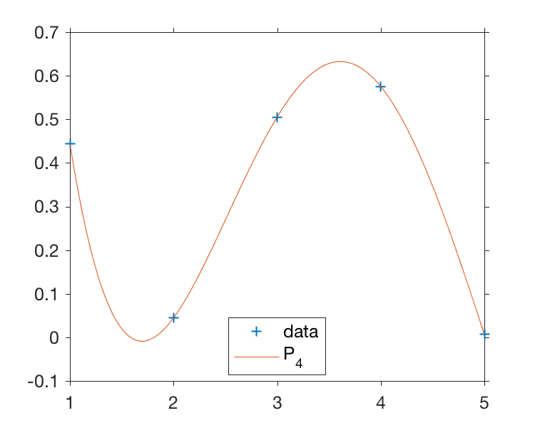] --- class: left, .toc[[✧](#toc)] ## Polynomial fitting Alternatively you can use least squares to fit a polynomial of any order equal to or less than `$N-1$` with the model `$$ Y_i = \beta_0 + \beta_1 X_i + \beta_2 X^2_i + \ldots \beta_{N-1} X^{N-1}_i $$` .center[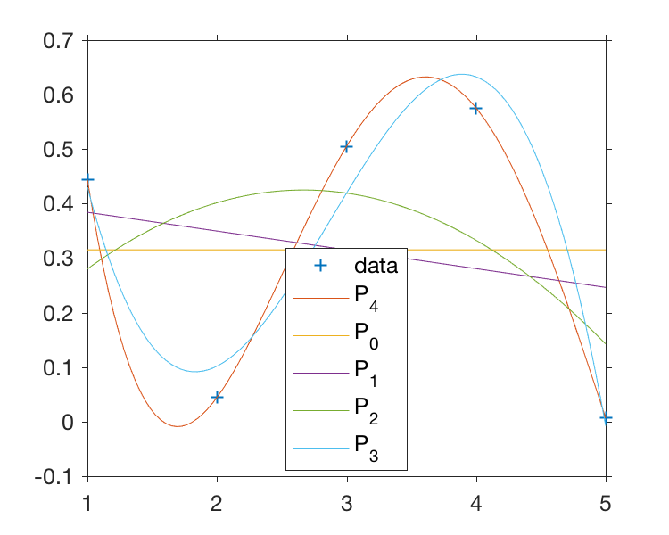] --- class: left, .toc[[✧](#toc)] ## Interpolating polynomial Beware that interpolating polynomial can quickly generate very large oscillations! Same example as before except that the original data point `$X_i = 2$` was moved to `$2.9$`. .center[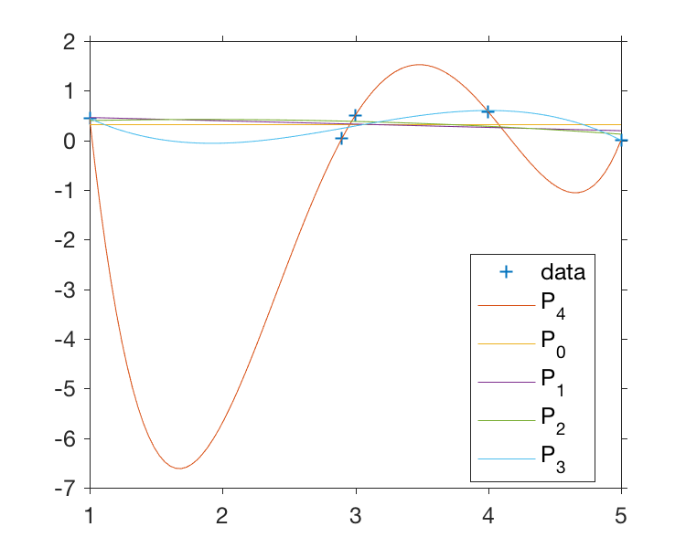] --- class: left, .toc[[✧](#toc)] ## Piecewise linear interpolation A *piecewise linear interpolation*, or simply *linear interpolation* consist in calculating the interpolating polynomial of order 1 over an interval `$[X_k,X_{k+1}]$`, i.e with `$N=2$` points. The [Lagrange formula](#lagrange) gives `$$ P_1(x) = \left(\frac{x-X_{k+1}}{X_k-X_{k+1}}\right)Y_k + \left(\frac{x-X_{k}}{X_{k+1}-X_{k}}\right)Y_{k+1} $$` which can be rearranged to give the *linear interpolant* `$$ L_1(x) = Y_k + (x-X_k)\frac{Y_{k+1}-Y_k}{X_{k+1}-X_k} $$` In Matlab it is implemented by ```ruby yi = interp1(x,y,xi); ``` --- class: left, .toc[[✧](#toc)] ## Piecewise linear interpolation: errors The Lagrange formula gives you an easy way to estimate the interpolation error. If `$\delta_k$` and `$\delta_{k+1}$` are the errors or uncertainties for `$Y_k$` and `$Y_{k+1}$`, since `$$ \begin{eqnarray} P_1(x) = a_k Y_k + a_{k+1} Y_{k+1}\\ \delta P_1(x) = \sqrt{a^2_k\delta_k^2 + a^2_{k+1}\delta_{k+1}^2} \end{eqnarray} $$` .center[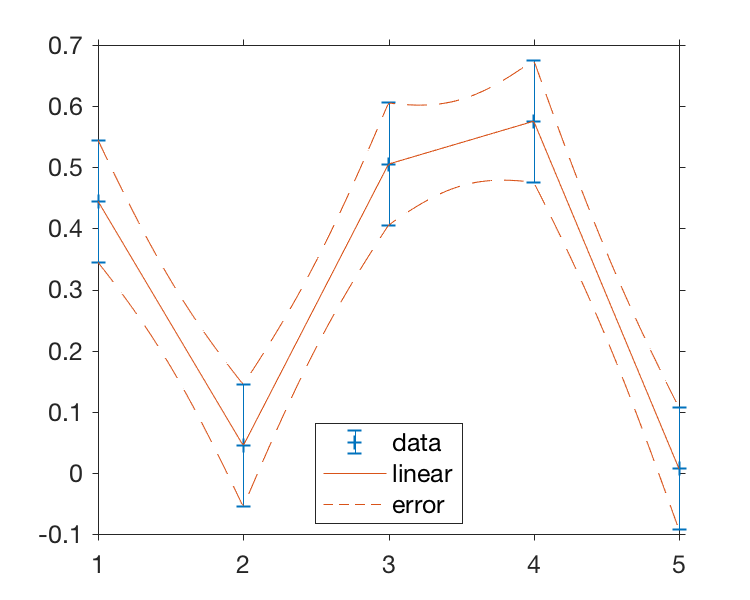] --- class: left, .toc[[✧](#toc)] ## Hermite polynomial interpolation The issue of large oscillations in interpolating can be reined in by using *Hermite polynomials* which satisfy additional conditions on its derivatives at the data points, `$$ P_n(X_k) = Y_k, \quad P^{(1)}_n(X_k) = d_k $$` where `$d_k$` is to be specified. `$P^{(\nu)}_n$` is the `$\nu$`-th derivative of `$P_n$`. -- A popular Hermite polynomial is the *shape-preserving piecewise cubic Hermite interpolating polynomial* or *shape-preserving pchip*, implemented in Matlab by ```ruby yi = pchip(x,y,xi); ``` --- class: left, .toc[[✧](#toc)] ## pchip example A pchip polynomial is cubic (order 3) and its derivatives `$d_k$`, or slopes, at each data point are zero or the *harmonic means* of consecutive slopes: `$$ \frac{1}{d_k} = \frac{1}{\delta_k} + \frac{1}{\delta_{k-1}} \quad \text{with}\quad \delta_k = \frac{Y_{k+1}-Y_{k}}{X_{k+1}-X_{k}} $$` .center[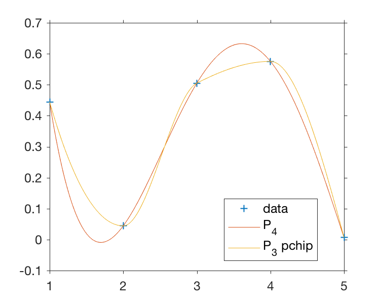] --- class: left, .toc[[✧](#toc)] ## Spline interpolation Another popular interpolation method uses *cubic splines* which are piecewise cubic interpolating polynomials with constraints on the second derivative to be a continuous. It is implemented in Matlab as ```ruby yi = spline(x,y,xi); ``` .center[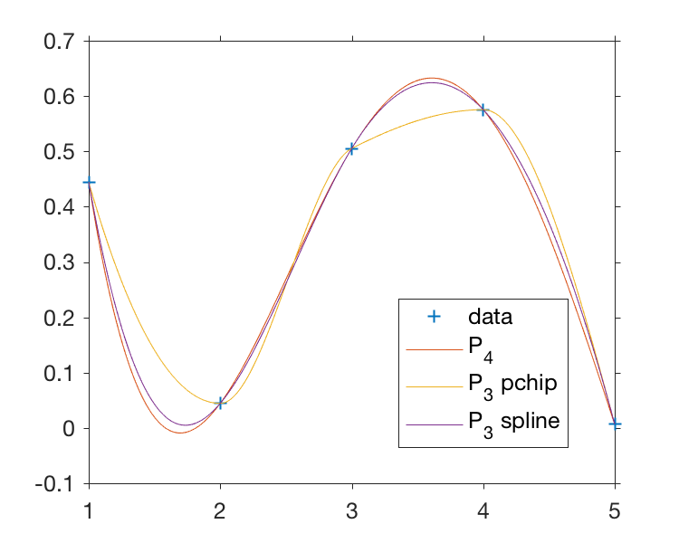] --- class: left, .toc[[✧](#toc)] ## Cubic interpolation Another method using piecewise polynomials of order 3 is called *cubic convolution* and is described in detail in [Keys 1981](http://dx.doi.org/10.1109/TASSP.1981.1163711). This method is accessible in one or higher dimensions in Matlab as ```ruby yi = interpn(x,y,xi,'cubic'); ``` .center[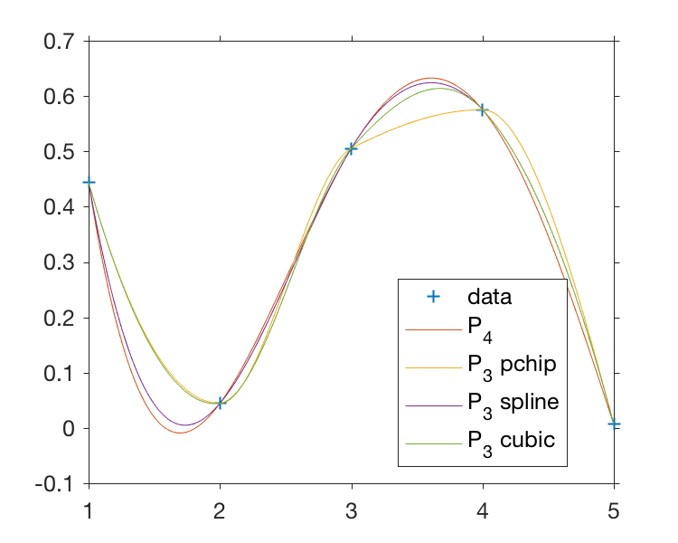] --- class: left, .toc[[✧](#toc)] ## Some comments Interpolating polynomials and splines are great sets of tool that allow you to quickly interpolate your data. Splines are not necessarily polynomial of order 3 and can be of greater order. There exists a very large body of litterature dealing with splines. -- We have dealt so far with methods of interpolation in one dimension but these can be easily expanded in two or more dimensions, notably the linear and cubic methods. -- Polynomial interpolation implies that you are exactly recovering your data, i.e `$P(X_i) = Y_i$`. This implies that your data are effectively error free. We now relax this condition and review some principles of local polynomial modeling. --- name: localpolynomial class: middle, center, .toc[[✧](#toc)] # 4. Local Polynomial Modeling --- class: left, .toc[[✧](#toc)] ## Polynomial by least squares We saw earlier that we can use least squares to fit a polynomial of any order equal to or less than your `$N-1$` data points: `$$ Y_i = \beta_0 + \beta_1 X_i + \beta_2 X^2_i + \ldots \beta_{N-1} X^{N-1}_i $$` .center[] --- class: left, .toc[[✧](#toc)] ## Local polynomial fitting Once again we attempt to estimate the value of a dependent variable `$y$` given a value of the independent value `$x$`. Here we follow closely reference [[7]](#references). The idea is to estimate an arbitrary function `$m(x)$` and its derivative noted `$m^{(1)}(x),m^{(1)}(x),\ldots,m^{(p)}(x)$` with the model `$$ Y_i = m(X_i) + \sigma(X_i) $$` where `$(X_i,Y_i)$` are observations and `$\sigma(X_i)$` is the variance of $Y_i$ at $x = X_i$. -- The function `$m(x)$` is approximated locally by a polynomial of order `$p$` by considering a Taylor expansion in the neighborhood of `$x_0$` as `$$ \begin{eqnarray} m(x) & \approx m(x_0) & + m'(x_0)(x-x_0) + \frac{m''(x_0)}{2!}(x-x_0)^2+\ldots+\frac{m^{(p)}}{p!}(x-x_0)^p\\ & = & \beta_0 + \beta_1 (x-x_0) + \beta_2 (x-x_0)^2 + \ldots + \beta_p (x-x_0)^p\\ \end{eqnarray} $$` --- class: left, .toc[[✧](#toc)] ## Local polynomial fitting The function `$m(x)$` is modeled locally as `$$ m(x) = \sum\limits_{j=0}^p\beta_j(x-x_0)^j. $$` and `$\widehat{m^{(j)}}(x_0) = j!\widehat{\beta_j}$`. The estimates of `$\beta_j$` of this polynomial are obtained for each location of interest `$x_0$` by least squares fitting, minimizing the following expression `$$ \sum\limits_{i=1}^n \{Y_i - \sum\limits_{j=0}^p \beta_j(X_i-x_0)^j\}^2 K_h(X_i - x_0) $$` where `$$ K_h(x) = \frac{1}{h}K\left(\frac{x}{h}\right) $$` `$K$` is called a *kernel function*, acting over a *half-bandwidth* `$h$`. --- class: left, .toc[[✧](#toc)] ## Local polynomial fitting In this example, the unknown function giving `$E[Y_i] = m(X_i)$` is estimated at `$X=x_0$` using an order one polynomial, using data points within the orange window. .center[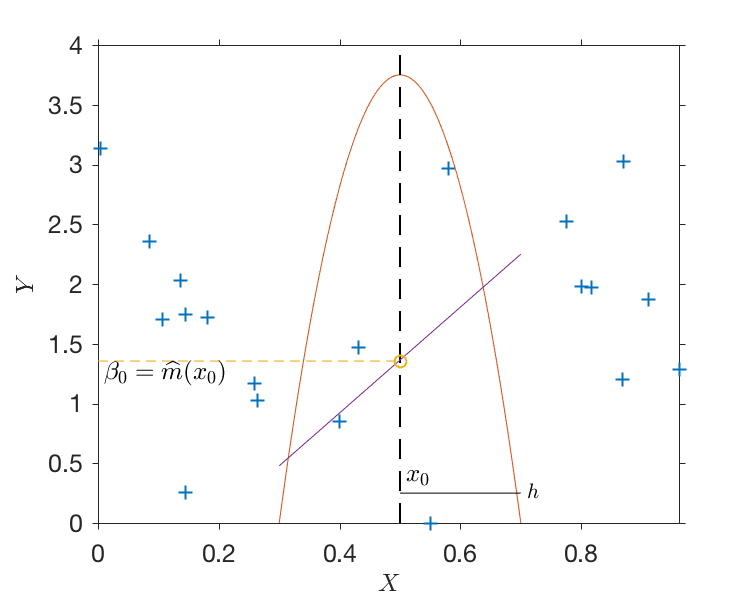] --- class: left, .toc[[✧](#toc)] ## Local polynomial fitting For fitting a polynomial to your data, a number of aspects need to be considered, all covered in many details as an example in reference [[7]](#references): 1. Which order polynomial do you need? Are you trying to estimate the value of your unknown function only, or are you trying to estimate the `$\nu$`-th derivative as well? In this case, it is recommended that `$p-\nu$` be an odd number. 2. What bandwidth `$h$` do you need? It will depends on the *density* of your data, as well as the order of the chosen polynomial. The choice of the bandwidth is a compromise between bias and variance of your estimate. Since you are trying to estimate `$p+1$` parameters by least squares you should have at least that number of points in your window. 3. What shape should the kernel function have? Should it be uniform? Gaussian? Quadratic? A quadratic kernel called the *Epanechnikov kernel* is often recommended (see practical this afternoon!) --- class: left, .toc[[✧](#toc)] ## Local polynomial fitting This figure shows an example of fitting a known function embedded in noise with a known variance. It shows the impact of the bandwidth and polynomial order on the bias and variance of the estimates. .center[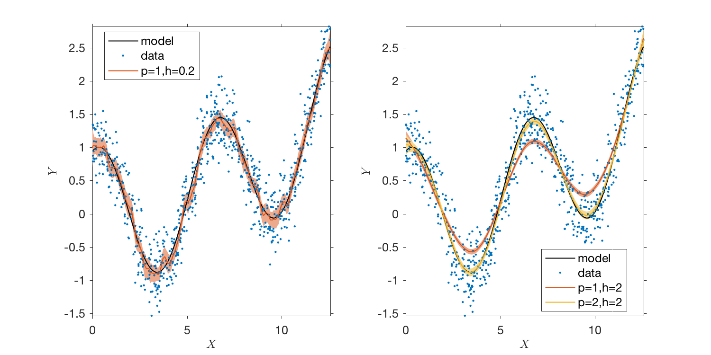] --- class: left, .toc[[✧](#toc)] ## Local polynomial fitting A simpler *smoother* consists in estimating the function `$m(x)$` as a polynomial of order `$0$`. The equivalent is called the *Nadaraya-Watson kernel estimator* defined as `$$ \widehat{m}_h(x) \equiv \frac{\sum\limits_{j=1}^n K_h(X_j -x) Y_j}{\sum\limits_{j=1}^n K_h(X_j -x)} $$` The typical kernel functions used are the *Gaussian kernel* `$$ K(z) = (\sqrt{2\pi})^{-1} \exp (-z^2/2) $$` and the *symmetric Beta family* `$$ K(z) = \frac{1}{\text{B}(1/2,\gamma+1)}(1-t^2)^\gamma_+, \quad \gamma = 0,1,\ldots, $$` where `$\text{B}(z,w)$` is a complicated function of no interest here. --- name: nonlinear class: middle, center, .toc[[✧](#toc)] # 5. A note on nonlinear fitting --- class: left, .toc[[✧](#toc)] ## Nonlinear fitting What does one do when the function you are trying to fit to your data is non linear in your parameter? -- As an example, you expect that a sinusoid function is a good model to describe the dependency of your dependent variable `$y$` on the independent variable `$x$`, i.e. `$$ y(x) = a\cos(x + \phi) $$` where `$a$` is the amplitude and `$\phi$` is the phase. -- In this case you're in luck because you can use trigonometric identities and write `$$ y(x) = a\cos(\phi)\cos(x) - a\sin(\phi)\sin(x) $$` -- You have *linearized your problem*, and you are now faced with a multiple linear regression problem, estimating `$a\cos(\phi)$` and `$a\sin(\phi)$` as a function of observations of `$y, \cos(x)$` and `$\sin(x)$` (see practical this afternoon). --- class: left, .toc[[✧](#toc)] ## Nonlinear fitting What if you really cannot linearize your problem? -- As an example, it is often useful to model the lagged correlation function `$\rho(\tau)$`, as in [Beal et al. 2015](http://dx.doi.org/10.1175/JPO-D-14-0119.1) .center[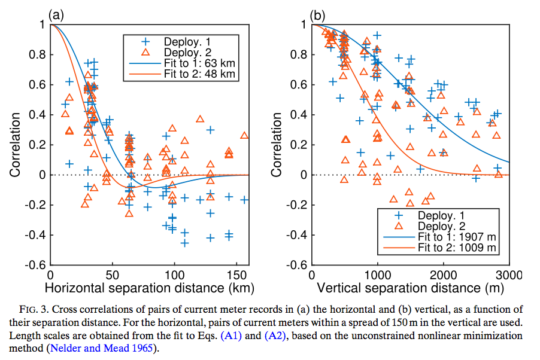] --- class: left, .toc[[✧](#toc)] ## Nonlinear fitting In this particular case, we assumed that the lagged correlation function for the along-shore component of velocity, as a function of separation distance (lag) was given by `$ \rho_h(r) = e^{-(r/r_h)^2}\cos\left( \frac{\pi r}{2 r_h}\right) $` The goal is here to fit the data for the value of the parameter `$r_h$`, a spatial lengthscale. We apply the same principle of minimization, trying to find the value `$r_h$` minimizing `$$ SS(Res) = \sum_{i=1}^N (\rho_h(r_i) - \rho_i)^2 $$` -- Since the problem cannot be put in linear form, the least square method is not available. Instead you must rely on *nonlinear optimization routines*. As an example, Matlab can apply common algorithms by the function `$\texttt{fminsearch}$`. --- exclude: true name: statistical class: middle, center .toc[[✧](#toc)] # 6. A note on statistical interpolation --- exclude: true class: left, .toc[[✧](#toc)] ## Statistical interpolation --- class: left, .toc[[✧](#toc)] ## Practical session Please download data at the following link: Please download the Matlab code at the following link: Make sure you have installed and tested the free jLab Matlab toolbox from Jonathan Lilly at [www.jmlilly.net/jmlsoft.html](https://www.jmlilly.net/jmlsoft.html) --- exclude: true class: left, .toc[[✧](#toc)] ```ruby plot(t,x) ``` First Header | Second Header ------------ | ------------- Content from cell 1 | Content from cell 2 Content in the first column | Content in the second column ~~this~~